ESL, ELEAGUE или DreamHack? Турниры по CS:GO с самым большим призовым фондом
25.10.2019
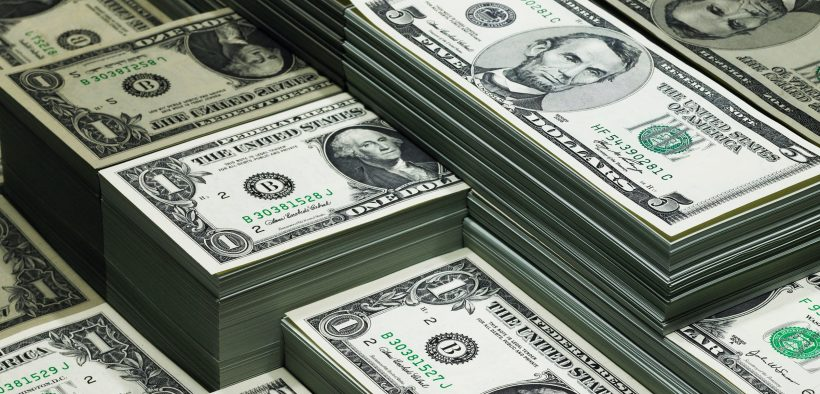
Вот уже на протяжении двух десятилетий мы наблюдаем за развитием франчайза Counter-Strike. За это время игра обрела безумную популярность и стала одной из передовых дисциплин в киберспорте. Все начиналось с небольших турниров в компьютерных клубах, а потом это постепенно переросло в переполненные стадионы. Пришли большие инвесторы, стали заключаться миллионные контракты, и CS перестала быть просто предметом для развлечения. Сегодня с помощью шутера Valve можно построить неплохую карьеру и заработать целое состояние.
Одним из главных источников дохода для профессиональных киберспортсменов Counter-Strike всегда были призовые деньги. Неважно, в какой версии игры они соревновались: 1.6, Source или Global Offensive. Индивидуальные спонсорские соглашения — тоже отличный способ увеличить свой заработок в CS:GO. Однако не каждый игрок обладает достаточно высокой медийностью, чтобы привлечь внимание многотысячной аудитории. В свою очередь, без этого пункта невозможно удовлетворить основные пожелания инвесторов.
Впоследствии, большую часть своих денег игроки зарабатывают за выступление на турнирах. И чем сильнее развивается Global Offensive, тем выше становятся суммы, разыгрываемые на передовых чемпионатах. Какие же ивенты больше всего обогатили своих участников? Давайте рассмотрим, какие события по CS:GO могут похвастаться рекордными призовыми фондами.
ESL Pro League
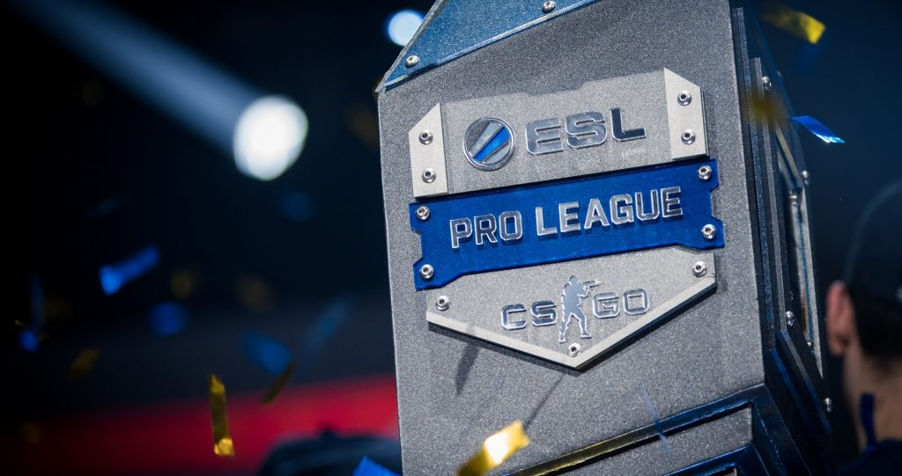
28 апреля 2015 года ESL в сотрудничестве с ESEA объявили о запуске профессиональной лиги по CS:GO. На кону стояли серьезные деньги: на первые два сезона организаторы выделили один миллион долларов США. Это сразу привлекло внимание лучших команд из Европы и Северной Америки, и помогло ESL Pro League занять твердую позицию в экосистеме турниров Global Offensive.
Каждый сезон EPL проходит в два этапа: региональные отборочные и LAN-финал. Призовые деньги разыгрываются в обеих стадиях соревнования. Так, например, в первом сезоне ESL отдали по $125,000 для европейского и северноамериканского дивизиона, а в оффлайне — $250,000. В сумме получалось по полмиллиона призовых за сезон.
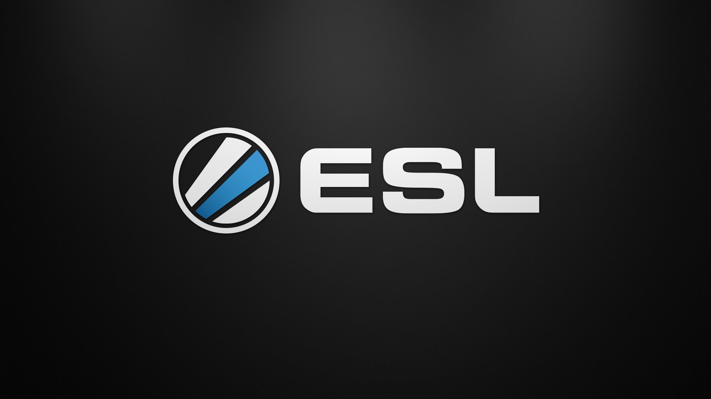
С 2016 года лига стала называться ESL Pro League, уменьшив вовлеченность ESEA в проекте. Общий призовой фонд, включая каждую фазу проведения, вырос до $750,000. Начиная с пятого сезона организаторы увеличили ставки до $1,000,000. Вместе с этим на EPL стали появляться новые дивизионы: Азия, Океания и Южная Америка.
Впрочем, со временем ESL задумались о затратности столь масштабного события и вернулись к отметке $750,000 за сезон. Команды с пониманием отнеслись к изменению, ведь квалификационные матчи в Европе и Америке стали проводиться в режиме LAN. Перемены не затронули менее популярные регионы: тамошние участники продолжают соревноваться в онлайне.
На момент написания статьи ESL Pro League достигла десятого сезона. Общий призовой фонд турнира составляет $750,000. Из них $600,000 уходят на финальную часть чемпионата, по $60,000 и $62,000 достаются европейским и североамериканским коллективам соответственно, и по $14,000 — восточным регионам.
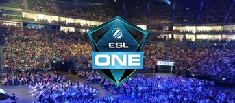
- ㊉ ESL ESEA Pro League S1 — $500,000
- ㊉ ESL ESEA Pro League S2 — $500,000
- ㊉ ESL Pro League S3 — $750,000
- ㊉ ESL Pro League S4 — $750,000
- ㊉ ESL Pro League S5 — $1,000,000
- ㊉ ESL Pro League S6 — $1,000,000
- ㊉ ESL Pro League S7 — $1,000,000
- ㊉ ESL Pro League S8 — $1,000,000
- ㊉ ESL Pro League S9 — $750,000
- ㊉ ESL Pro League S10 — $750,000
Esports Championship Series
Второй по значимости лигой на киберспортивном рынке CS:GO является Esports Championship Series. Ее организатором выступает компания FACEIT. Благодаря ECS турнирный оператор из Великобритании впоследствии выиграл тендер на проведение мейджора. Речь идет о FACEIT Major: London, который состоялся 5-23 сентября 2018 года.
Как и ESL Pro League, каждый сезон Esports Championship Series состоит из региональных квалификаций и LAN-финала. Однако, в отличие от EPL, в ECS принимают участие только команды из Европы и Северной Америки. Впрочем, между этими турнирами почти нет различий в плане призового фонда.
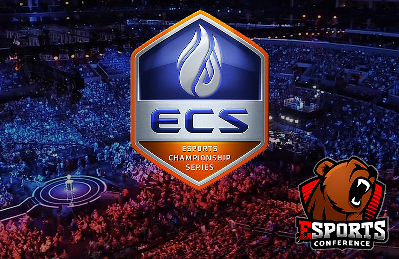
Первый сезон ECS разыграл рекордную в своей истории сумму — $945,000. После этого FACEIT приубавили обороты и снизили планку до $750,000. С тех пор единственным изменением в плане вознаграждения участников стало распределение призовых в онлайн-части соревнования. Раньше на отборочные среди европейских и североамериканских составов выделялось по $45,000, а с седьмого сезона бюджет вырос до $125,000 на дивизион.
- ㊉ ECS S1 — $945,000
- ㊉ ECS S2 — $750,000
- ㊉ ECS S3 — $750,000
- ㊉ ECS S4 — $750,000
- ㊉ ECS S5 — $750,000
- ㊉ ECS S6 — $750,000
- ㊉ ECS S7 — $750,000
- ㊉ ECS S8 — $750,000
Intel Grand Slam
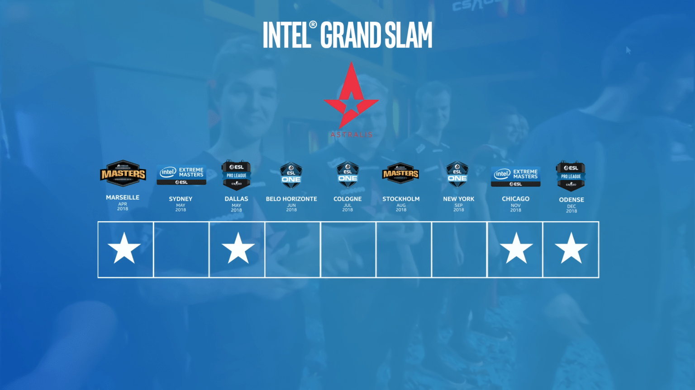
Intel Grand Slam — серия турниров, за победы на которых можно заработать миллион долларов США. В нее входят такие ивенты, как Intel Extreme Masters, DreamHack Masters, ESL One и ESL Pro League. Проект был анонсирован в 2017 году на выставке E3 и стал реальностью в результате совместной работы ESL и Intel.
Чтобы получить $1,000,000 команде необходимо выиграть четыре чемпионата, входящих в специальное расписание Intel Grand Slam. Каждый из титулов должен быть завоеван в строгом промежутке из десяти последовательных событий. Когда с момента победы проходит десять турниров, она пропадает с актива борющегося за приз коллектива.
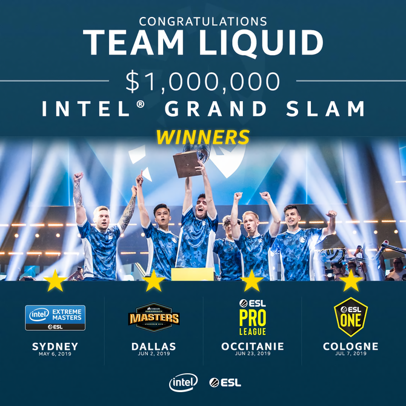
Триумфаторами первого сезона IGS стали игроки датской команды Astralis. Во втором сезоне верх одержали американцы из Team Liquid. Они, в отличие от датчан, сделали это за максимально короткий срок. На пути к миллиону TL выиграли четыре турнира подряд: IEM Sydney, DreamHack Masters Dallas, ESL Pro League S9 и ESL One Cologne. Заняло это у них чуть больше двух месяцев — 5 мая – 7 июля.
Ошеломительный успех Liquid заставил ESL пересмотреть правила победы на Intel Grand Slam. В новом сезоне участникам нужно или стать чемпионами на шести обычных турнирах серии, или на четырех, но тогда одно из соревнований должно попадать под выделенную категорию Masters Level. Сейчас особыми ивентами являются IEM Katowice 2020 и ESL One Cologne 2020. К ним могут присоединиться мейджоры, если ESL или DreamHack получат права на их проведение.
- ㊉ Intel Grand Slam S1 — Astralis (gla1ve, device, Magisk, dupreeh, Xyp9x)
- ㊉ Intel Grand Slam S2 — Team Liquid (nitr0, Stewie, NAF, EliGE, Twistzz)
Мейджоры Valve
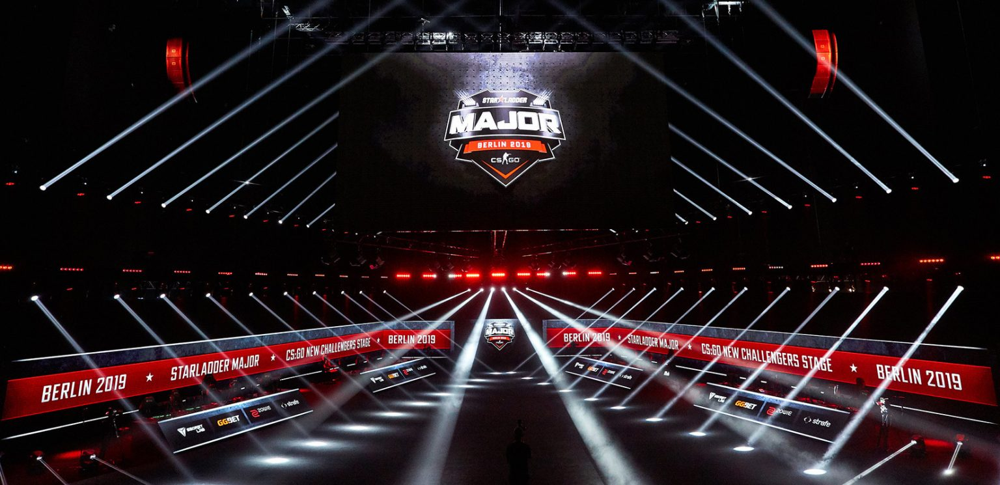
Раз в полгода Valve присваивают выбранному ими турниру статус мейджора. Такие события принято считать чемпионатами мира по CS:GO. Издатель передает контроль над проведением ивента в руки определенного турнирного оператора и почти не участвует в организационном процесе. Каждое из таких соревнований получает по $1,000,000 в призовой фонд лично из бюджета Valve.
Помимо традиционных призовых, участники мейджора зарабатывают процент от продажи стикеров. Это внутриигровые предметы CS:GO, отображающие логотипы соревнующихся команд и автографы игроков. Их выпускают в виде наклеек, которые можно нацепить на текстуры оружия в игре.
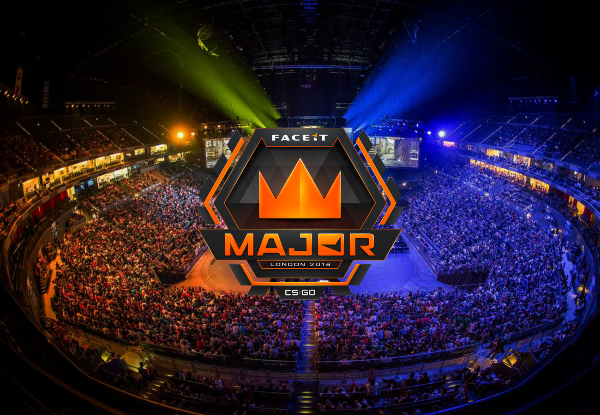
Стоит отметить, что первые ивенты по CS:GO под эгидой Valve разыгрывали только $250,000. Увеличение призового фонда произошло на MLG Columbus 2016. С того момента каждый мейджор придерживается стандарта в $1,000,000, и так уже на протяжении почти четырех лет.
- ㊉ MLG Columbus 2016 — $1,000,000
- ㊉ ESL One Cologne 2016 — $1,000,000
- ㊉ ELEAGUE Major: Atlanta 2017 — $1,000,000
- ㊉ PGL Major Krakow 2017 — $1,000,000
- ㊉ ELEAGUE Major: Boston 2018 — $1,000,000
- ㊉ FACEIT Major: London 2018 — $1,000,000
- ㊉ IEM Katowice 2019 — $1,000,000
- ㊉ StarLadder Major Berlin 2019 — $1,000,000
ELEAGUE
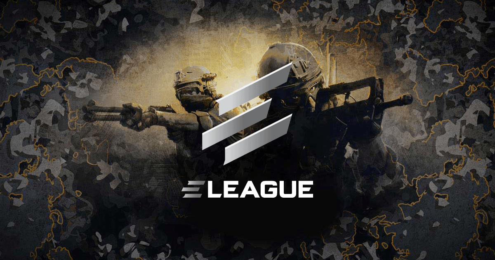
ELEAGUE — американская компания, специализирующаяся на проведении киберспортивных турниров. Она была основана в 2015 году и с тех пора успела провести семь ивентов по CS:GO. Два из них получили лицензию мейджора от Valve: ELEAGUE Atlanta 2017 и ELEAGUE Boston 2018.
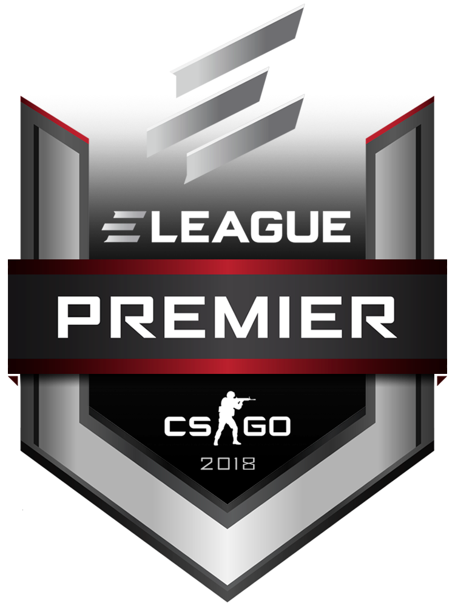
Первый сезон EL был самым масштабным: как в плане призового фонда, так и по списку участников. В нем двадцать четыре команды из Европы и Северной Америки боролись за рекордный на тот момент денежный приз $1,400,000. Турнир продлился больше двух месяцев и каждый из его матчей прошел в режиме LAN. Некоторые из игр даже показали на американском телевидении — канале TBS.
Во втором сезоне призовой фонд сократился с $1,400,000 до $1,100,000, а список участников — с 24 команд до 16. Потом на смену регулярным сезонам пришел ELEAGUE Premier, где количество призовых упало до $1,000,000. Впоследствии, американский организатор и вовсе стал терять интерес к Counter-Strike. Перед тем, как покинуть сцену CS:GO, он провел ELEAGUE Invitational на $150,000.
- ㊉ ELEAGUE Season 1 — $1,400,000
- ㊉ ELEAGUE Season 2 — $1,100,000
- ㊉ ELEAGUE Major: Atlanta 2017 — $1,000,000
- ㊉ ELEAGUE CS:GO Premier 2017 — $1,000,000
- ㊉ ELEAGUE Major: Boston 2018 — $1,000,000
- ㊉ ELEAGUE CS:GO Premier 2018 — $1,000,000
- ㊉ ELEAGUE CS:GO Invitational 2019 — $150,000
WESG
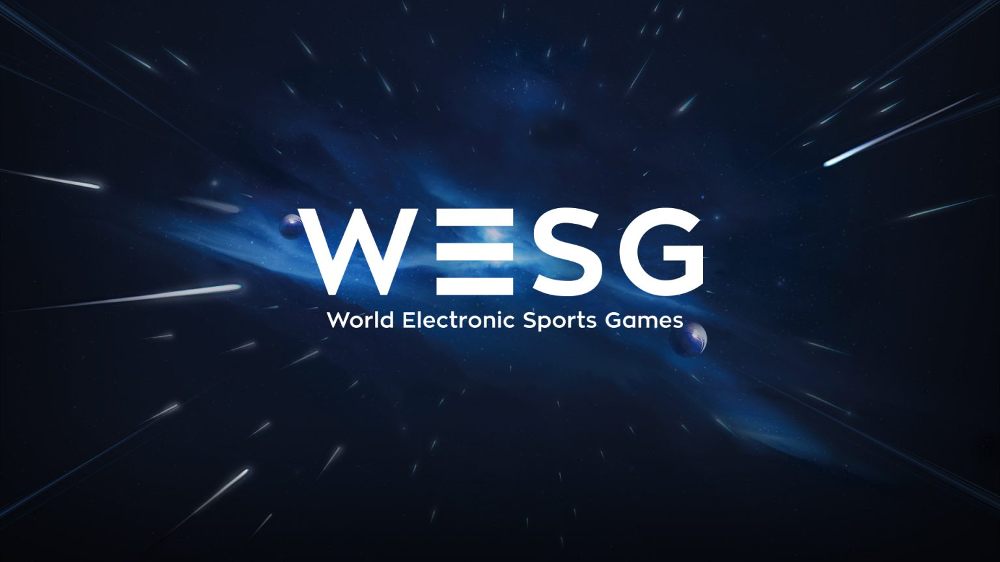
World Electronic Sports Games — серия глобальных киберспортивных событий, учредителем которой выступает китайская компания Alisports. Одной из профильных дисциплин WESG является CS:GO. В нее организаторы вложили много денег и смогли даже установить рекорд по призовому фонду. WESG 2016 Grand Final — турнир с наибольшим количеством призовых за всю историю Counter-Strike. В нем участники сражались за полтора миллиона долларов США. Если же еще и учитывать региональные квалификации, то в общей сумме в первом сезоне WESG CS:GO было разыграно $1,823,000.
Во втором сезоне WESG появился женский дивизион. Под турнир по CS:GO среди девушек турнирный оператор из Китая выделил около $228,000. В свою очередь, общий призовой фонд у мужчин составил $1,787,000. Впрочем, на финальной части WESG 2017 Grand Final приехавшим коллективам предложили те же деньги, что и в прошлом году — $1,500,000.
К 2018 году Alisports все же сократили бюджет на WESG, что неминуемо затронуло CS:GO. На последнем чемпионате в Чунцине игроки мужских команд по Counter-Strike боролись за $890,000, а женских — за $105,000. Если суммировать все призовые фонды, включая разыгранные деньги на региональных отборочных, то в третьем сезоне CS:GO обошлась WESG приблизительно в $1,222,000.
- ㊉ WESG 2016 Grand Final — $1,500,000
- ㊉ WESG 2017 Grand Final — $1,500,000
- ㊉ WESG 2018 Grand Final — $890,000
UPDATED: 19.01.2022